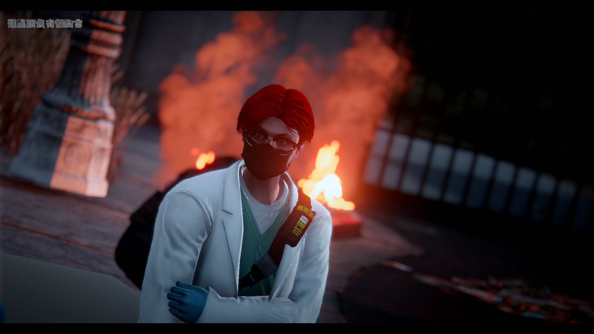

白塔醫院｜醫療團隊
🔷 醫院高層

史蒂芬·史傳奇
院長
 Twitch 頻道
Twitch 頻道
肖堯
副院長
阿鳥
急診主任

曉翔
創傷中心主任
🔷 主治醫師及不分科住院醫師
沈若凝
主治醫師
李言光
主治醫師
李宸宇
主治醫師
xxx
主治醫師
xxx
急診主任
xxx
急診主任
葉夫根尼．謝羅夫
不分科住院醫師
科別：不分科
專長：暫無
名言：
「冷淡是我的心理為了保護自己再不受到傷害 ；而我學醫是為了不再失去任何我所珍視的人。」
小鳥遊蒼太
不分科住院醫師
科別：急診科
專長：大型創傷手術 / 器官修補
名言：
「我可以是火柴，雖不炙熱但能溫心，如果可以我選擇薯條加大跟巧克力布朗尼。」
🔷 緊急救護員
姜睿恩
EMT
林辰軒
EMT
🔷 院內其他人員
沈舒意
咖啡廳老闆娘
XXX
保全